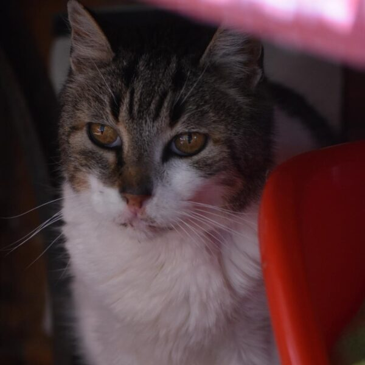

Ells també esperen



Vivia en una colònia controlada fins que un dia va haver de ser capturat perquè estava malalt. Va ser llavors quan van descobrir qui era realment: un gat més gran, sensible i extremadament bondadós, que havia patit més del que qualsevol animal hauria.
No sabem la seva edat exacta, però intuïm que és un gat veterà. Malgrat una vida dura i plena de carències, Gordito no guarda gens ni mica de maldat. Al contrari: és tendresa, agraïment i noblesa en estat pur.
Gordito mereix passar el temps que li quedi en una veritable llar, envoltat de cures, tranquil·litat i afecte. Al refugi ho està passant malament; no entén aquest entorn ni se sent còmode. Per això ens encantaria que ben aviat aparegués aquesta família que li ofereixi per fi la pau i l'amor que tant mereix.
Gordito només necessita aquesta persona especial que li torni l'estabilitat, l'amor i la confiança que va perdre. A canvi, oferirà lleialtat, afecte i una connexió única.